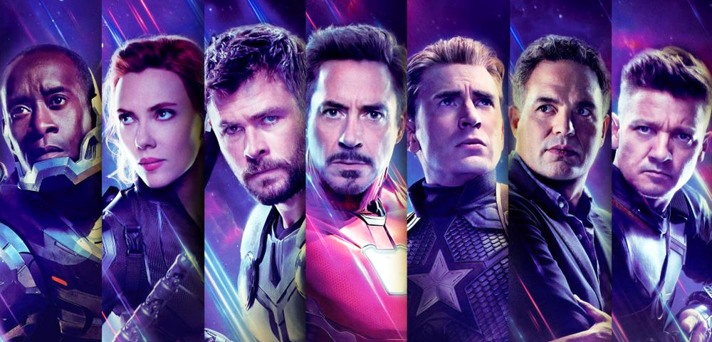

About Iron Man
Tony Stark is the wealthy son of industrialist and weapons manufacturer Howard Stark and his wife, Maria. Tony grew up a genius with a brilliant mind for technology and inventions and, naturally, followed in his father’s footsteps, inheriting Stark Industries upon his parents’ untimely death. Tony designed many weapons of war for Stark Industries, far beyond what any other company was creating, while living the lifestyle of an irresponsible playboy.
Characteristics
- Perseverance.
Tony doesn’t give up. He built a flying suit of armor using scrapes in a cave, he synthesized a new element when he was on the verge of death, he went head-to-head with a super soldier with nothing but a gauntlet/watch device.
- Bravery.
This one goes somewhat with the first. Tony is one of the most base level heroes in MCU and yet he still runs head on into some of the most dangerous situations to help people. I mean, he faced down Loki without his suit.
- Self-preservation.
I think this can be learned in a “don’t act like Tony” way. While Tony can be incredibly brave, his bravery often works against him because he takes it to the point of recklessness. He got thrown out of a window by Loki because he pushed Loki too far with his snarky comments.
- Be your own person.
Tony was someone who could have easily coasted through life on his father’s fame and money but instead he became greater than his father. Tony is also his own person in public. He acknowledges when he has done something wrong, but he doesn’t allow others to dictate who he should be.
- Loyalty.
Tony is always trying to protect the people he cares about. He becomes Iron Man in the memory of Yinsen, he makes sure his closest friends are secure when he is dying, all of these show how loyal Tony can be.
- Intelligence is more important than brute strength.
Tony has about average physical strength, but his intelligence allows him to accomplish things that should, by all rights, be impossible. He is able to be on an equal playing field with people like Thor, Hulk, and Captain America because he continues to adapt and gain more knowledge.
Friends
As Iron Man is a part of the Avengers - a team of superheroes -, he is really close with:
